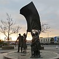
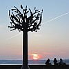

Lé Solé est ieune des millions d'êtailes dans not' galaxie, lé C'mîn d'St. Jacques. Y'a neu plianètes dans not' système solaithe:
Et y'a un tas d'astéroïdes et d'conmètes tchi cirtchulent entouor lé Solé étout.
La Tèrre s'trouve à nénante-trais millions d'milles du Solé, mais ch'est la leunmiéthe produite par l'Solé tchi supporte la vie sus not' plianète.
En Jèrri, j'sommes la pliaiche la pus ensolilyie dans l's Îles Britanniques. Né v'chîn pouortchi j'disons en Angliais "Sunny Jersey", mais i' faut admett' qué, compathé à la France, y'a trop d'bliâse et d'plyie pouor présenter eune înmage dé solé constant ès vîsiteurs Français.
Quand même, y'a un tas d'gens tchi aiment lus solilyi sus nos grèves en Êté. Mais ach'teu l's autorités donnent d's avèrtissements entouor lé dangi d'la radiâtion solaithe. Ès êcoles, les mousses portent des chapieaux pouor lus protégi quand i'sont à jouer dans l'bel quand i' fait bé.
I' sembl'ye qu'nos anchêtres louangeaient l'solé. L's archéologistes tchi travâlent pouor l'Héthitage dé Jèrri ont dêcouvèrt à ches drein qué lé d'dans d'la tombe à La Hougue Bie est en lîngne auve lé l'vant du solé ès êtchinnoxes et qu'les rayons du solé illeunminnent les pièrres du d'dans d'eune faichon mystéthieuse. Comme tchi qu'ches gens-là éthaient peu bâti un monûment coumme chennechin? Il' éthaient deu craithe qué l'solé 'tait l'dgieu tchi lus baillait la vie, les frits et les pliantes.
Et si j'èrgardons les gens couochis lé ventre au solé sus nos grèves en Êté, eûtent-i' compliètement tort?
Des ditons:
Faut faithe lé faîn tandi qué l'solé lit.
N'y'a rein d'nouvé souos l'touannement du solé
Tchi lî donn'nait la leune aniet i' vouos d'mand'dait l'solé d'main
Y'a des grîns au solé; j'avons changement d'temps.
Lé solé dé s'tembre trompe Madanme
Quand l'solé pâsse dans l'ieau, ch'est sîgne dé plyie.
Y'a d's appias au solé; ch'est sîngne dé plyie.
Quand l'solé est en leune - sîngne d'ôrage ou d'breune
D'la plyie à solé l'vant, i' r' f'tha bé d'vant longtemps.
Solé tchi s'lève matîn,
Du vocabulaithe:
|
les leunettes d'solé |
sunglasses |
|
lé solé |
sun |
|
lé système solaithe |
solar system |
|
un rayon d'solé |
sunbeam |
|
lé l'vant du solé |
sunrise |
|
lé couochant du solé |
sunset |
|
s'caûffer au solé |
to bask |
|
s'couochi lé ventre au solé |
to sunbathe |
|
sé solilyi |
to sunbathe |
|
l'pouvé solaithe |
solar power |
|
un p'tit solé |
sun-dog |
 |
 |  |
Viyiz étout: